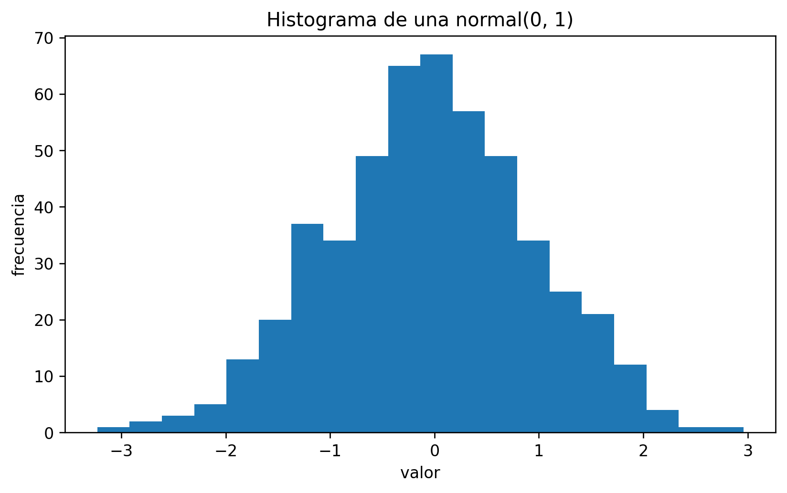

import matplotlib.pyplot as pltCapítulo 4 — Gráficos básicos con matplotlib
🚀 Abrir este capítulo en Google Colab
NoteObjetivos del capítulo
Al terminar este capítulo vas a poder:
- crear gráficos básicos (
plot,scatter,hist) con matplotlib, - entender la sintaxis mínima de un gráfico: ejes, títulos, etiquetas y leyenda,
- sobreponer varios gráficos en una misma figura,
- guardar figuras a un archivo (opcional).
1. ¿Qué es matplotlib?
matplotlib es una librería para hacer gráficos en Python. La forma más común de usarla es:
NoteSintaxis clave (import)
import matplotlib.pyplot as pltcrea el aliasplt.- Luego casi todo se hace con
plt.algo(...)(por ejemploplt.plot(...)).
Glosario
- figura (figure): el “lienzo” completo del gráfico.
- ejes (axes): el área donde se dibuja (x e y).
- plot: línea.
- scatter: nube de puntos.
- histograma (hist): barras para mostrar distribución.
- leyenda (legend): cuadro con el nombre de cada serie.
2. Nuestro primer gráfico (línea)
Vamos a crear datos simples y graficarlos.
import numpy as np
import matplotlib.pyplot as pltx = np.arange(0, 10) # 0,1,2,...,9
y = x**2 # y = x^2
plt.plot(x, y)
plt.title("Ejemplo: y = x^2")
plt.xlabel("x")
plt.ylabel("y")
plt.show()
NoteSintaxis clave (líneas)
plt.plot(x, y)dibuja una línea.plt.title(...)pone un título.plt.xlabel(...)yplt.ylabel(...)etiquetan los ejes.plt.show()muestra la figura (es buena práctica en notebooks).
3. Gráfico de dispersión (scatter)
Un scatter muestra puntos individuales. Es típico cuando quieres ver relación entre dos variables.
np.random.seed(123)
x = np.arange(1, 51)
y = 2*x + np.random.normal(0, 10, size=len(x)) # relación con ruido
plt.scatter(x, y)
plt.title("Scatter: relación aproximada y ≈ 2x + ruido")
plt.xlabel("x")
plt.ylabel("y")
plt.show()
NoteSintaxis clave (scatter)
plt.scatter(x, y)dibuja puntos (no línea).- Es útil para ver patrones, tendencias y valores atípicos.
4. Histograma (hist)
Un histograma sirve para ver “cómo se distribuyen” los valores.
datos = np.random.normal(loc=0, scale=1, size=500)
plt.hist(datos, bins=20)
plt.title("Histograma de una normal(0, 1)")
plt.xlabel("valor")
plt.ylabel("frecuencia")
plt.show()
NoteSintaxis clave (hist)
plt.hist(datos, bins=20)crea un histograma con 20 barras (bins).- Más
bins= más detalle (pero puede verse ruidoso).
5. Sobreponer varios gráficos (varias líneas)
Cuando quieres comparar series, puedes dibujar varias líneas en la misma figura.
x = np.arange(0, 10)
y1 = x
y2 = x**2
y3 = x**3
plt.plot(x, y1, label="y = x")
plt.plot(x, y2, label="y = x^2")
plt.plot(x, y3, label="y = x^3")
plt.title("Varias líneas en una sola figura")
plt.xlabel("x")
plt.ylabel("y")
plt.legend()
plt.show()
NoteSintaxis clave (leyenda)
label="..."nombra cada serie.plt.legend()muestra la leyenda.
6. Guardar un gráfico (opcional)
Guardar gráficos es útil para informes. En Quarto lo dejamos desactivado para no crear archivos en el render.
plt.plot([1, 2, 3], [1, 4, 9])
plt.title("Figura para guardar")
plt.savefig("mi_figura.png", dpi=150, bbox_inches="tight")
Tip
Recomendación
En proyectos reales, guarda figuras en una carpeta como figuras/ para tener todo ordenado.
Ejercicios propuestos
Línea con transformación
Creax = np.arange(0, 11)yy = 3*x + 2. Graficaycontraxcon título y etiquetas.Respuesta esperada: una línea recta creciente que cruza
y=2cuandox=0y llega ay=32cuandox=10.Scatter con dos grupos
Genera dos nubes de puntos:- Grupo A:
xentre 1 y 30,y = x + ruido - Grupo B:
xentre 1 y 30,y = 2x + ruido
Dibuja ambos en el mismo scatter (dos llamadas aplt.scatter) con leyenda.
Respuesta esperada: dos “bandas” de puntos: una alrededor de la recta
y=xy otra alrededor dey=2x.- Grupo A:
Histograma comparativo
Genera 1000 datos normales y 1000 datos uniformes. Haz dos histogramas (uno a la vez) usando el mismo número de bins.Respuesta esperada:
- el histograma normal se concentra en el centro (forma de “campana” aproximada),
- el uniforme se ve “plano” (barras relativamente parejas).
- el histograma normal se concentra en el centro (forma de “campana” aproximada),
Tres líneas con leyenda
Grafica en una misma figurasin(x),cos(x)ysin(x)+cos(x)paraxentre 0 y2π. Usa leyenda.Respuesta esperada: tres curvas suaves y periódicas con una leyenda que las identifique.
Guardar figura
Crea un gráfico y guárdalo enfiguras/ejemplo.png.Respuesta esperada: el archivo
figuras/ejemplo.pngexiste y al abrirlo se ve el gráfico guardado.